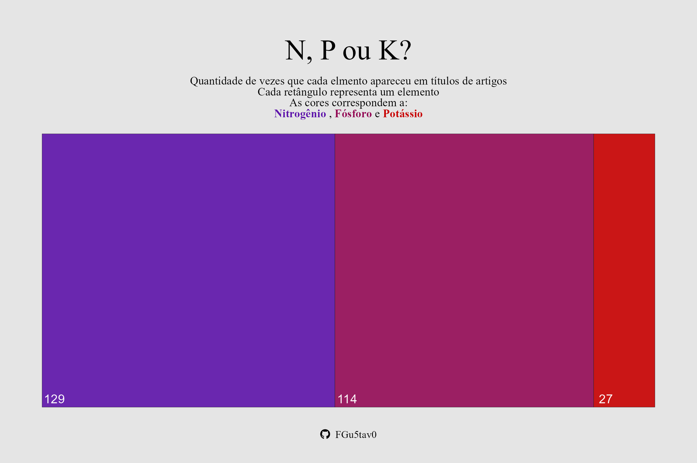

Quantos artigos eu preciso ter no currículo até o fim do doutorado em Ciência do Solo?
Introdução
A resposta é óbvia: Não sei!
E não tem como saber, pois, vai depender de perguntas que vão para além do individual de cada um. Agora, não significa que não podemos fazer algumas comparações e tentar sair do escuro. Bem, é exatamente isso que eu trago nesse texto. Não são raros os dias que penso que tudo que faço (da Pós-graduação) leva milhões de anos para ficar pronto e, por consequência, me vejo divagando em uma estrada de pensamentos que não tem fim. Para acalmar minhas expectativas, eu resolvi fazer algo. Gastei parte do meu tempo para tentar encontrar parte da resposta. Assim, investiguei, mesmo que superficialmente, a pergunta: Qual o desempenho dos estudantes de doutorado que já passaram pela pós? Com a esperança de encontrar algo para verificar como está o meu andamento individual. O desempenho é difícil de mensurar e, bem, o que o desempenho realmente mede, né? Mas utilizei o que tinha em meu alcance para traçar uma linha de raciocínio. A informação mais fácil de conseguir de alunos já doutores é o número de artigos que publicaram e que estão no currículo Lattes. Com base nesses números levantei algumas hipóteses: 1. Artigos demandam tempo e o número de publicações reflete o tempo investido. 2. A quantidade de artigos pode indicar as parcerias do aluno. 3. Quanto mais artigos, mais a pessoa se dedica a temas relacionados à pós-graduação. Obviamente, há problemas com essas hipóteses e elas abordam apenas uma parte do problema, mas são as que tenho até o momento. Ainda assim, a necessidade de publicar artigos por parte dos alunos torna essa uma opção interessante a ser considerada.
Metodologia
Para minha análise, coletei dados de diversas fontes. A análise foi conduzida exclusivamente com alunos de doutorado que frequentaram o curso de Ciência do Solo entre os anos de 2013 e 2022. O período foi determinado de forma arbitrária, com base no tempo disponível para realizar o trabalho. Como sou aluno da UFRGS, utilizei os dados dos egressos do Programa de Pós-Graduação em Ciência do Solo desta universidade. No entanto, para aumentar a amostra, incluí também dados da pós-graduação em Ciência do Solo da UFSM.
Nos sites de cada programa de pós-graduação (Egressos da UFRGS e Egressos do PPGCS da UFSM), compilei o número e os nomes dos alunos formados em cada um dos anos especificados. Inicialmente, fiquei surpreso ao descobrir que o PPGCS da UFSM possui um levantamento sobre a atuação profissional de seus egressos. Essa é exatamente mais uma das ideias que gostaria de implementar com os alunos do PPGCS da UFRGS, já que desconheço tal informação.
Com os nomes em mãos, iniciei a tarefa mais trabalhosa de todo o processo: encontrar e baixar o currículo Lattes de cada um deles. Ao todo, foram baixados 86 currículos da UFRGS e 98 da UFSM.
Os dados podem ser baixados no meu github link
Outra informação importante era determinar os anos em que cada pessoa cursou o doutorado em seus respectivos programas de pós-graduação. Para isso, obtive a base de dados de discentes da CAPES, que abrange o período de 2004 a 2022. Utilizei o currículo Lattes como filtro para identificar os alunos que concluíram o doutorado em cada um dos programas e os anos em que estiveram matriculados.
A maior dificuldade agora é definir quais artigos cada pessoa publicou durante o doutorado. Inicialmente, não há como fazer essa distinção, pois essa informação não está disponível no Lattes e não posso me dar ao luxo de investir mais tempo nessa investigação. Portanto, estabeleci um critério de corte: considerei apenas os artigos com ano de publicação igual ou anterior ao ano de conclusão do doutorado. Reconheço que, na prática, a maioria dos artigos é publicada no ano seguinte à submissão, e que os alunos tendem a publicar os artigos do doutorado mais próximo do final do curso, o que poderia resultar em anos diferentes. No entanto, essa foi a abordagem que encontrei para manter todos os dados em uma mesma “base”. É importante ressaltar que estamos partindo do zero em termos de informação. Com os resultados obtidos, realizei uma análise descritiva dos dados por meio de histogramas. Além disso, elaborei um gráfico da frequência total de artigos publicados e conduzi uma análise dos títulos dos artigos por meio de uma nuvem de palavras, levando em consideração as palavras mais frequentes encontradas nos artigos. Por fim, realizei uma análise da frequência com que termos como nitrogênio, fósforo e potássio aparecem nos títulos, como uma forma indireta de compreender a tendência ou determinar qual é considerado mais importante.
Resultados
Dos 184 alunos da amostra, um total de 1517 artigos foram encontrados, porém 4 dos alunos não tinham nenhum artigo em seus currículos Lattes. Isso suscita uma discussão inicial sobre a importância do Lattes e a necessidade de mantê-lo atualizado. O Lattes é um exemplo mundial de uma plataforma bem-sucedida que armazena dados de pesquisadores e alunos. Apesar de suas falhas, é inegável seu valor como um repositório de acesso público. De fato, o Lattes é a fonte de dados para várias pesquisas interessantes. O histograma (Figura 1) mostra que a distribuição de artigos publicados com ano igual ou inferior ao ano de conclusão do doutorado é assimétrica negativa ou se aproxima disso. Com um número maior de pessoas publicando números pequenos de artigos frente a números mais altos.
 Figura 1: Histograma da distribuição do número de artigos por aluno.
Figura 1: Histograma da distribuição do número de artigos por aluno.
um modelo de massa de probabilidade será ajustado no futuro
A Figura 2 apresenta os dados expressos em termos de frequência (absoluta e acumulada). O número médio de artigos foi de 8; no entanto, devido à natureza assimétrica da curva, a média pode não representar adequadamente os dados. Portanto, a mediana, com um valor de 6 artigos, pode ser mais relevante. Isso revela uma descoberta significativa: o número mais frequente corresponde à própria mediana. Além disso, mais de 50% dos alunos no banco de dados publicaram entre 2 e 8 artigos. A avaliação se isso é muito ou pouco depende de vários aspectos. Outro dado interessante é que 90% dos alunos tiveram entre 0 e 18 artigos. No entanto, ao observar o gráfico, é evidente que números elevados são raros. Espero que esta breve análise auxilie meus colegas de mestrado e doutorado em Ciência do Solo a refletirem sobre sua produção acadêmica.
 Figura 2: Frequência relativa e acumuada do número de artigos por aluno de doutorado.
Figura 2: Frequência relativa e acumuada do número de artigos por aluno de doutorado.
Análise dos títulos
Com os títulos, temos a nuvem de palavras. Essa visualização mostra as palavras mais frequentes nos títulos dos mais de mil artigos avaliados. Como esperado, ‘Solo’ e ‘Brasil’ são as palavras mais comuns. Em seguida, encontramos palavras como ‘produtividade’, ‘diferentes’, ‘nitrogênio’, ‘fósforo’ e assim por diante. Acredito que uma mensagem interessante aqui seja tentar evitar palavras óbvias. Embora seja desafiador, aumentar a diversidade nos títulos é uma prática enriquecedora.
Análise de N, P e K em títulos
Bem, como estou realizando meu doutorado com potássio, achei interessante verificar a frequência com que ele é mencionado nos títulos dos artigos. Surpreendentemente, ele é pouco mencionado. A Figura 3 mostra uma visualização do número de vezes que N, P e K aparecem nos títulos, tanto em português quanto em inglês. É interessante notar a disparidade significativa entre os elementos. Não sei se isso está relacionado à importância, à dificuldade de pesquisa ou a algum outro fator que possa explicar essa diferença. Acredito que ainda não tenhamos descoberto tudo o que podemos sobre nenhum desses elementos.
 Figura 2: Número de vezes que N, P e K foram encontrados nos títulos dos artigos.
Conclusão
Para concluir, determinar o número ideal de artigos é uma tarefa complexa, e esta análise está longe de fornecer uma resposta definitiva. No entanto, é inegável que os dados coletados oferecem informações importantes. Espero que essas descobertas incentivem meus colegas a refletirem sobre suas próprias jornadas acadêmicas. Questões como essa são fascinantes de investigar, e caso surjam dúvidas ou alguém queira contribuir, não hesite em enviar uma mensagem.